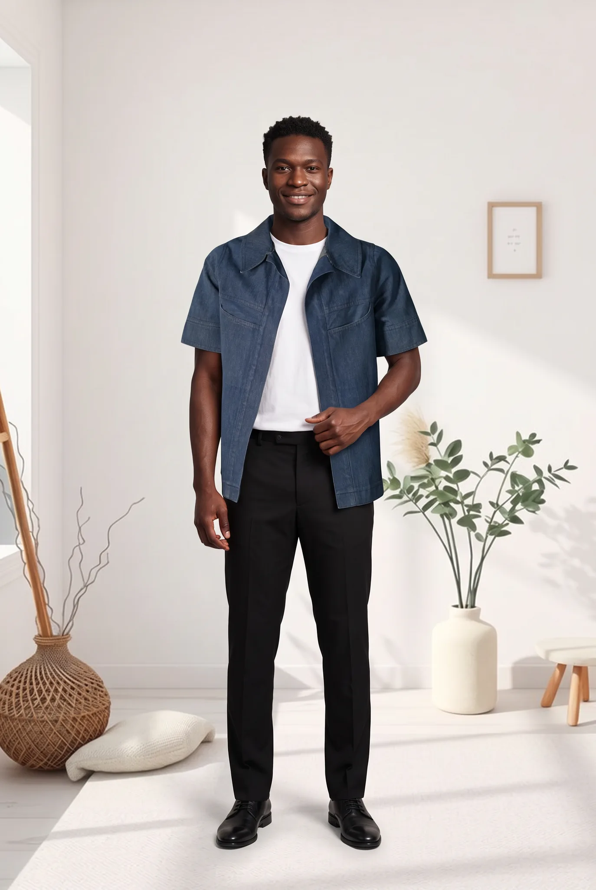
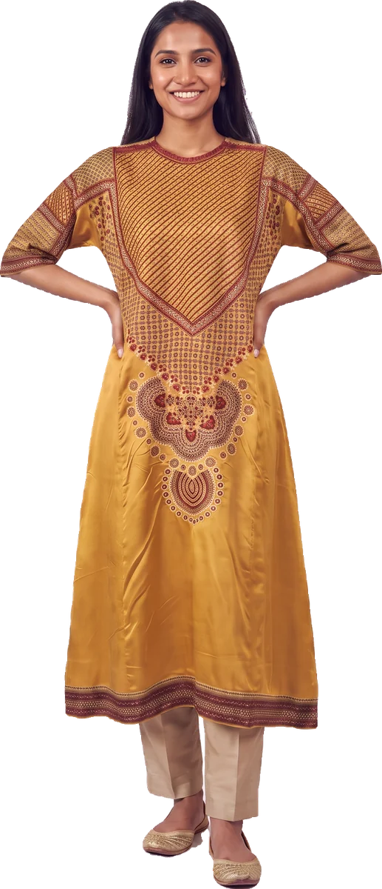
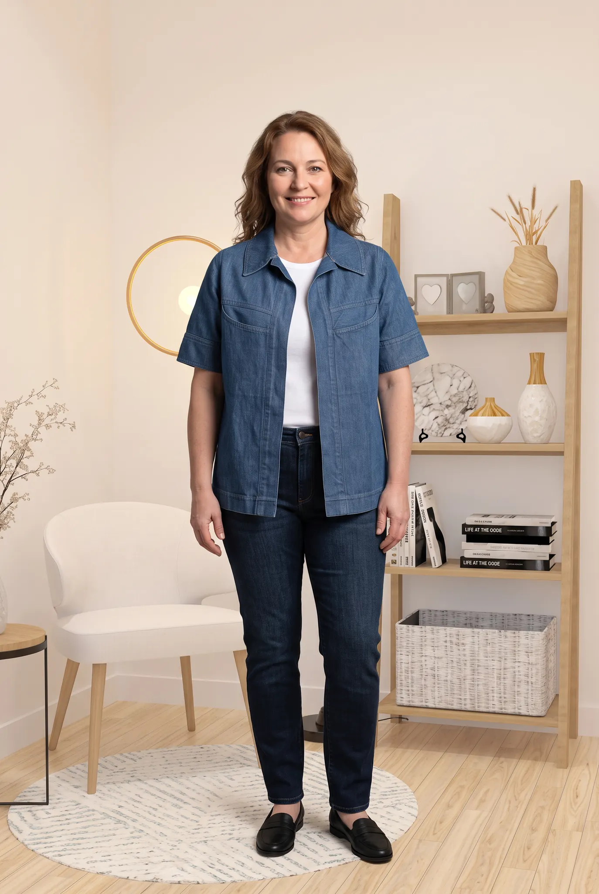

Add garment views
Start with a front photo. Add the back and both sides when you want more reference detail.
LOCAL FASHION STUDIO
Turn garment photos into on-model catalog shots. Explore poses, backgrounds and angles in one studio.





THE TRANSFORMATION
See how an original product photo looks alongside an on-model sample. Choose a garment, then move the divider to compare.
THE STUDIO TOOLKIT
HOW IT WORKS
Start with a front photo. Add the back and both sides when you want more reference detail.
Choose a model, shot type, pose and background.
Compare photos with their references and download the shots you want to keep.
ANGLE DRAFTS
Explore a front, side, back and detail view from the same sample coat shoot.
MODEL LIBRARY
CREATIVE DIRECTION
Explore campaign settings and pose references.
LOCAL STUDIO
Preview the workflow and download sample results. Your uploads stay in your browser during this demo.
These are prepared examples. Uploaded photos appear as references.
RESOURCES
Use clear photos in consistent lighting. Capture the front, back and both sides, keeping prints and details visible.
The local demo uses sample results. Your files serve as references in the preview and never leave the browser.
Yes. Open the local preview and try any sample workflow without signing in.
The localhost demo has no payments or usage charges.
Clothing brands, independent boutiques, online sellers and anyone planning a garment catalog.